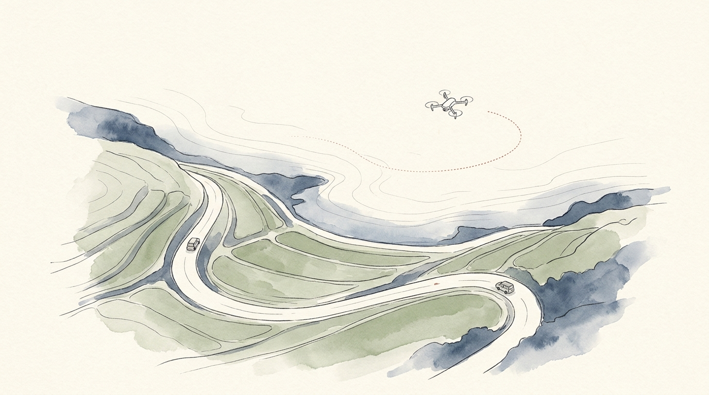
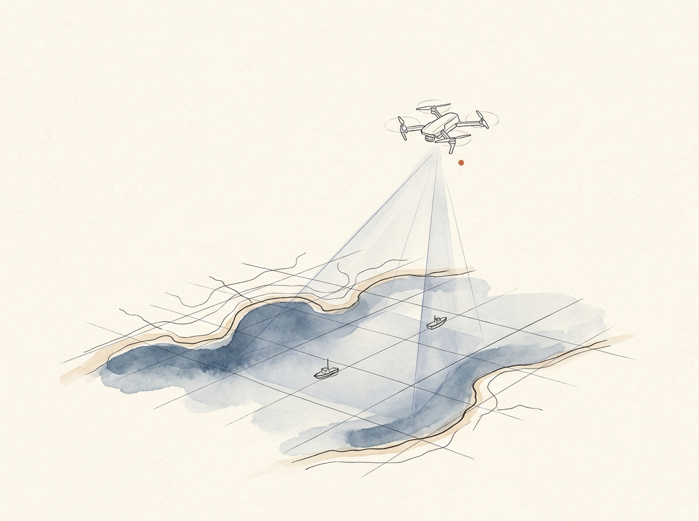
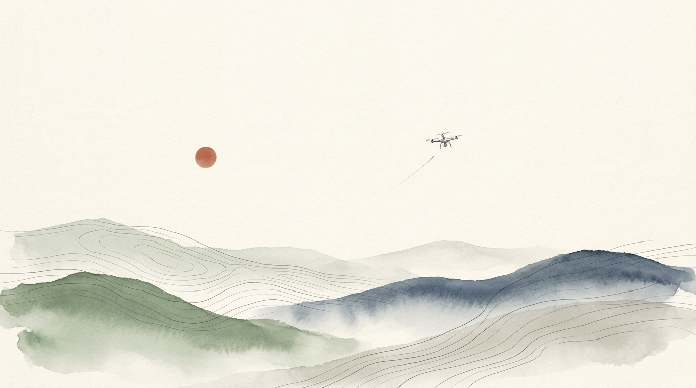

無人機間隔航測影像的移動物件追蹤與「定位不確定性」

我們的 LLM Wiki 整理了無人機追蹤領域五塊關鍵拼圖——從 2D 影像外觀出發，一路走向 3D 世界座標、誤差橢圓與動靜判斷：

IoU = 0 仍能精準關聯。| 論文 / 方法 | 座標空間 | 最大強項與代表成績 | 面對「間隔航測」的缺口 |
|---|---|---|---|
| AMOT (2026) | 2D 影像 | 外觀雙向互驗，VisDrone IDs 砍 72.4%（36.4 FPS） | 無法區分視差與真實移動；稀疏間隔下易誤鎖相似車 |
| LightGlue (2023) | 2D 局部幾何 | 保留關鍵點空間分布，比 SuperGlue 快 2.2× | 靜態場景訓練；追蹤移動小目標須配合 ROI 與剛體檢驗 |
| MG-MOT (2024) | 3D 海面世界 | UAV 元資料投影，長時程 Re-ID +17.2% IDF1 | 假設平坦海面、無誤差協方差；元資料異常即生假位移 |
| UCMCTrack (2024) | 2D 地面平面 | 旋轉誤差橢圓＋馬氏距離，單核 CPU >1000 FPS | 假設平坦地面、僅單次獨立誤差傳播（未校準跨曝光 Cij） |
| MoD2T (2024) | 2D 影像 | 位移＋背景雙線索，UAVDT 動靜 MVF1 0.827 | 快速相機驟降至 0.230；缺「未確定」態與啟停回饋 |
跳出 2D 進入 3D 世界座標：間隔航測視角跳變大，結合局部幾何（LightGlue）與 UAV 直接定位＋DSM 才能穩住跨照片關聯。
承認並校準定位不確定性：用旋轉誤差橢圓與固定地物校準 Sij，把「定位漂移」從「真實移動」中剝離。
不確定性回饋近即時追蹤：以三態動靜推論與觀測機會控制有限延遲，兼顧啟停 ID 延續與發布時效。

確認零基礎故事線與頁數（新增本頁即為 G1 決策成果）。
逐頁回查 wiki/papers/ 核實所有數據與來源標註，控制單頁字數。
檢查 16:9 視窗無溢位、插畫與 SVG 正常顯示、切換互動順暢。
點選任一頁即可跳轉；每頁皆附對應 LLM Wiki 來源